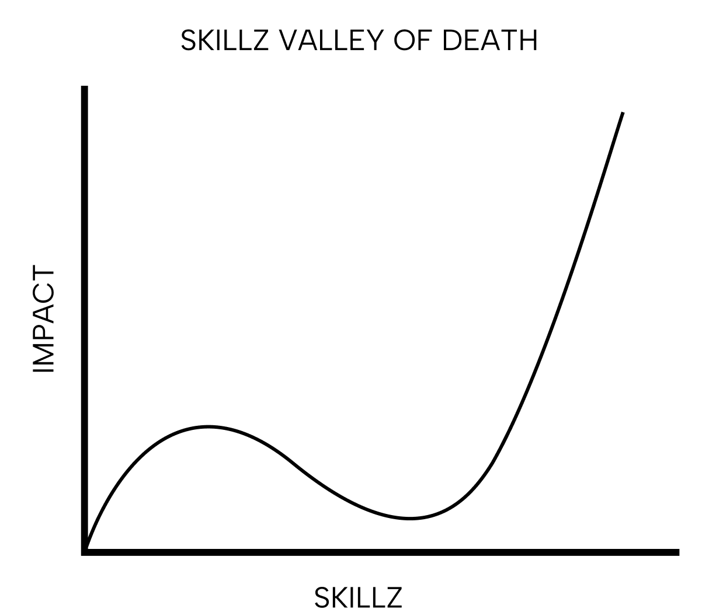
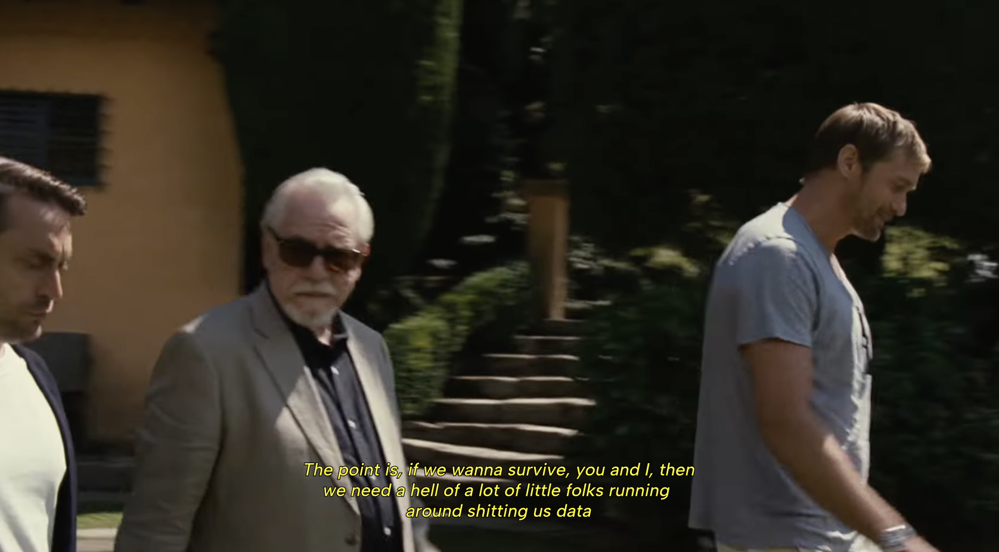

I believe the coolest part about the University of Waterloo is how early you start interacting with the real world. The sim2real gap seems much smaller than other places.
After my first week of orientation, I distinctly remember being told to prepare a resume and start applying to jobs. No safety wheels or life-jacket. Welcome to the NBA. As someone who was extremely overconfident from their high school days, I found this experience disorienting, painful and pretty fucking awesome.
After going through this job search experience every 4 months, I’ve noticed a friction between youthful idealism and the way that the old people think. I see this most commonly manifested in an idea I like to call the Skillz Valley of Death (inspired by the hardware start-up valley of death).

I define “skillz” to be a skill tree with a mix of both breadth and depth. Someone with skillz is one of those rare people who are seemingly able to do everything with incredible speed and quality.
"If you know the way broadly you will see it in all things" - Miyamoto Musashi
The problem illustrated by the Skillz Valley of Death is that there are forces that will discourage you to explore, and instead push you to specialize.
Let’s say you’re an aspiring pastry chef that got their first internship making éclairs. After your internship, you receive more opportunities to make éclairs at better bakeries. You may even get the opportunity to work at the best bakery in the world. But what if you want to try making tarts? You have the transferable skills and know how to take extreme ownership. But you’re a fucking amateur so no one will let you make tarts in their bakeries.
With limited internships and recruitment processes that filter for specialists, it’s harder to get high impact opportunities for a breadth of skills. Financial pressure or psychological insecurities make this even harder. If I’m complaining about this so much during university, I suspect it’s much worse when you’re an “adult” in the “real world.”
I think it’s natural. Trying other stuff makes you worse at your specialty. The shareholders don’t care about learning. They need a hell of a lot of specialists collaborating to build their monopoly.

But I say fuck that. I personally believe using my 6 waterloo co-ops to try out a bunch of stuff will compound in the future. There’s two ways to get through this valley of death.
Work at a great place. Most large companies aren’t built for you to learn. How will you learn new things in a 1000+ person company? However, certain companies are run in ways that make it frictionless to join different teams, pursue intrapreneurship and ultimately gain skillz. This is a great low risk method to learn skillz. Start-ups are an extreme case of this where the resource constrained environment will force you to gain skillz.
Grit + Agency. If you don’t work at a great place then it’s just a matter of pursuing skillz with courage. Others have explained it better than me. Put in the time, do it on the side, quit your job, whatever. It’s just a skill issue. Bend yourself to it.
"Everyone will tell you never to put all your eggs in one basket. But, what they won't tell you is that you can always figure out a way to make more eggs" - Kobe Bryant
In conclusion, If I were to critique this idea, I would say that pursuing skillz takes time and the world doesn’t end when you graduate. Most Waterloo students tend to think in timelines of 4 months which is probably the cause of my urgency. I’m really hoping in a couple years I read this again and reminisce about how young and naive I was. However, I still believe that if you can acquire skillz faster, you should. Either way, I still think the idea is something to think about. I wish someone had told me this when I was in first year.